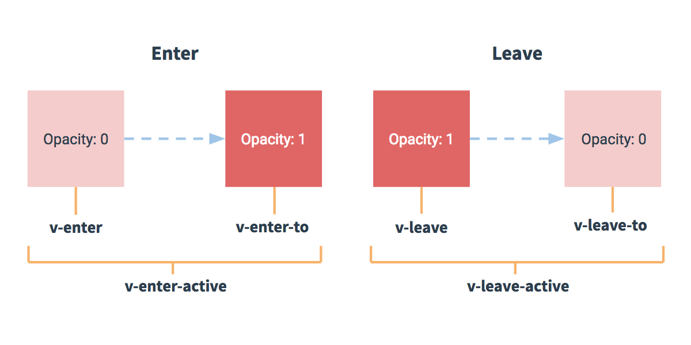

在进入/离开的过渡中，会有6个class切换。
- v-enter:定义进入过渡的开始状态。在元素被插入时生效，在下一帧移出。
- v-enter-active：定义过渡的状态。在元素整个过渡过程中作用，在元素被插入时生效，在transition/animation完成后移出。这个类可以被用来定义过渡的过程时间，延迟和曲线函数。
- v-enter-to：2.1.8版本及以上 定义进入过渡的结束状态。在元素被插入一帧后生效（于此同时 v-enter 被删除），在transition/animation完成后移出。
- v-leave：定义离开过渡的开始状态。在离开过渡被触发时生效，在一帧移出。
- v-leave-active：定义过渡的状态。在元素整个过渡过程中作用，在离开过渡被出阿发后立即生效，在transition/animation 完成后移除。这个类可以用来定义过渡的过程时间，延迟和曲线函数。
- v-leave-to：2.1.8版本及以上 定义离开过渡的结束状态。在离开过渡被触发一帧后生效（于此同时 v-leave 被删除），在transition/animation 完成后移除。

对于这些在 enter/leave 过渡中切换的类名，v- 是这些类名的前缀。使用 transition name="my-transition"可以重复前缀，比如 v-enter替换为 my-transition-enter。
v-enter-active 和 v-leave-active 可以控制 进入/离开 过渡的不同阶段，在下面章节中会有实例